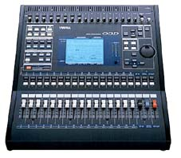

Yamaha 03D fully automated digital mixing console
click here for rear panel detail

click here for front panel detail
The rackmountable 03D is a
self-contained, 26-input/18-output fully-automated digital mixing console in its own
right, destined to set new standards of its own. The 03D features an intuitive user
interface, ease of operation and a long list of essential professional engineer's tools -
including fast 32-bit internal digital audio processing, versatile analog and digital I/O
configuration with 20-bit ADs and DAs, 32-bit onboard multi-effects processors with freeze
(sampling) and guitar amp simulation effects, motorized faders, fader and mute grouping,
surround sound mixing, scene snapshot memories, onboard automation, MIDI remote
capabilities, plus convenient cascading options which make it the ideal companion for an
02R or another 03D.
Digital Input/Output Specifications
| Terminals |
Format |
Level |
Connector |
| DIGITAL STEREO IN AES/EBU |
AES/EBU |
RS-422 |
XLR-3-31 type |
| DIGITAL STEREO IN COAXIAL |
S/P DIF * |
0.5 Vpp/75 Ohm |
RCA Pin Jack |
| DIGITAL STEREO OUT AES/EBU |
AES/EBU |
RS-422 |
XLR-3-32 type |
| DIGITAL STEREO OUT COAXIAL |
S/P DIF * |
0.5 Vpp/75 Ohm |
RCA Pin Jack |
| TO HOST |
-- |
RS-422 |
Mini DIN 8pin |
| MIDI (MTC**) IN-OUT-THRU |
-- |
-- |
DIN 5pin |
| MOUSE |
(MS) |
-- |
D-SUB 9pin male |
| TO EDITOR (REMOTE) |
-- |
-- |
D-SUB 9pin female |
| WORD CLOCK IN |
-- |
TTL/(75 Ohm IN/OUT) |
BNC |
| WORD CLOCK OUT |
-- |
TTL/75 Ohm |
BNC |
| General Specifications
| Frequency Response |
20Hz - 20kHz +1, -3dB (+4dB into 600 Ohms) |
| Dynamic Range |
110 dB min. STEREO OUT D/A converter |
| 105 dB typ. STEREO IN to STEREO OUT (AD/DA) |
| 100 dB min. STEREO IN to STEREO OUT (AD/DA) |
| THD (Total Harmonic Distortion) |
Less than 0.1% (20Hz-20kHz @ +14dB into 600 Ohms) |
| Less than 0.01% for STEREO IN to STEREO OUT (1kHz @ +18dB into 600 Ohms) |
Hum & Noise (20 Hz-20 kHz)
Rs = 150 ohm, input gain = max.
input pad = off,
input sensitivity = -60dB |
-128dB equivalent input noise |
| -94 dB residual output noise from STEREO OUT (STEREO OUT = OFF)k |
| -94 dB (98 dB S/N) STEREO OUTPUT. Master fader at nominal level and all CH faders at minimum. |
| -64 dB (68 dB S/N) STEREO OUTPUT. Master fader and one CH fader at nominal level. |
| Maximum Voltage Gain |
76 dB CH IN to STEREO OUT/BUS OUT |
| 76 dB CH IN to AUX OUT (pre fader) |
| 12 dB STEREO IN to STEREO OUT |
| 76 dB CH IN to MONITOR OUT (via Stereo bus) |
| Crosstalk |
Adjacent Channels |
-70 dB (1 kHz) |
| Input to Output |
-70 dB (1 kHz) |
| Sampling Rate |
Internal |
48 kHz/44.1 kHz |
| External |
32 kHz-48 kHz +/-6% |
| Signal Delay |
Less than 2.5 ms input to output (fs = 48 kHz) |
| Digital Output Dither |
16-24 bit |
| Faders |
Type |
60mm motorized |
| Resolution |
+6 to -90, -unlimited dB |
| Display |
320 x 240 dot backlit LCD (with contrast control) |
| EQ |
High |
+/-18dB, 20 Hz-20.1 kHz, LPF, peaking, shelving |
| High-Mid |
+/-18dB, 20 Hz-20.1 kHz, peaking |
| Low-Mid |
+/-18dB, 20 Hz-20.1 kHz, peaking |
| Low |
+/-18dB, 20 Hz-20.1 kHz, HPF, peaking, shelving |
Memories/
Libraries |
Scene |
51 (1 preset, 50 user) |
| Channel |
51 (2 preset, 49 user) |
| EQ |
80 (40 preset, 40 user) |
| Effects |
96 (64 preset, 32 user) |
| Dynamics |
80 (40 preset, 40 user) |
| Stereo Output Meters |
12-segment LED meter x2 |
| Power Requirements |
USA & Canada |
120V AC, 60Hz |
| European |
230V AC, 50Hz |
| Power Consumption |
85W |
| Dimensions |
460 x 516 x 204mm (18.1" x 20.3" x 8") |
| Weight |
16kg (35.3lbs) |
| Free-air operating temperature |
10°C to 35°C (50°F to 95°F) |
| Relative Humidity |
25%-80% |
|